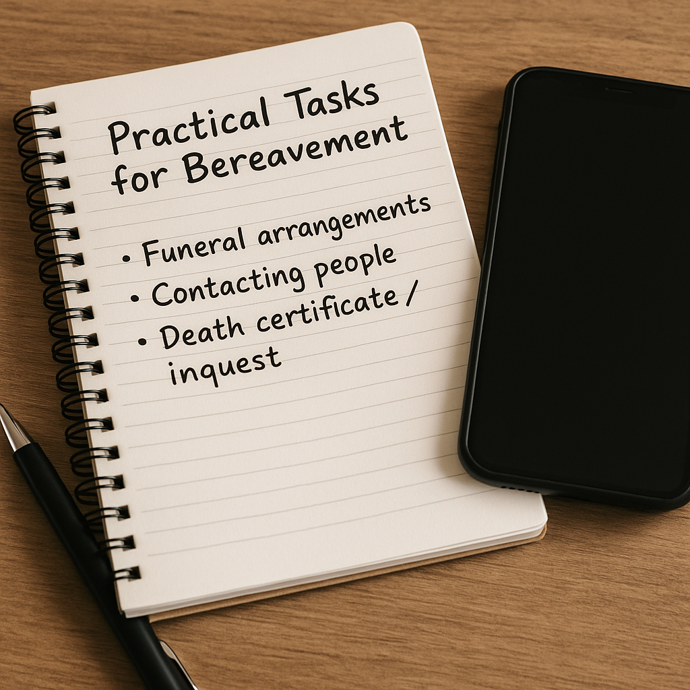

Losing someone to suicide is devastating. Support can help carry what feels unbearable.
Suicide Bereavement
Alongside grief you may face shock, guilt, anger, confusion, stigma, and practical tasks you never asked for.
Here you’ll find plain-spoken explanations, gentle tools for the early weeks and the long haul, guidance for children and communities,
and links to dedicated UK and Scottish support.
1) How suicide bereavement feels
There is no “right way” to grieve. Most people cycle through many feelings in waves.
Shock & disbelief — numbness, dissociation, or feeling unreal.
Guilt & searching — “what if…?” thoughts are common but not your fault.
Anger — toward the person, services, yourself, or the world.
Stigma & isolation — people may avoid talking; you deserve company.
Physical strain — disrupted sleep, appetite, concentration, and immunity.
2) What makes suicide bereavement different
Compared with other deaths, suicide loss often brings:
Unanswered questions you may never solve completely.
Trauma overlap (flashbacks, intrusive images, startle responses), especially if you found the person or heard details.
Police/coroner processes that add legal language and delay, which can complicate grieving.
Wider ripples across friends, colleagues, schools and communities.
3) Early days & practicalities

Let others help with admin. “Good enough” decisions are enough for now.
Immediate care
Ask a trusted person to stay or check in regularly.
Keep a small routine: food, water, meds, brief walk, daylight.
Use crisis lines for the night hours; you don’t have to be alone with it.
Practical steps
Appoint a “point person” for calls and messages.
Funeral planning: ask your chosen faith/community leader or funeral director to guide step-by-step.
Police/coroner (UK): you can ask for a family liaison contact and for plain-English explanations.
Boundaries
It’s okay to decline invasive questions; “We’re not discussing details.”
Limit social media; appoint one person for updates if needed.
4) Supporting children & young people
Children need honest, simple language and repeated reassurance.
Tell the truth simply: “They died because their brain was very unwell.” Avoid euphemisms like “gone to sleep”.
Reassure safety: “It wasn’t your fault. You are cared for and we will look after you.”
Expect repeat questions: children revisit loss as they grow; answer in short, consistent phrases.
School link: inform school/college so they can support and monitor.
5) Neurodiversity: processing grief differently
Autistic, ADHD, dyslexic and other neurodivergent people may grieve and process social information in different ways. Adapt support to match the brain you’re helping.
Communication
Use concrete language and repeat as needed. Offer written summaries after calls/meetings.
Provide choice (text/email over phone) and extra time to respond.
Avoid abstract metaphors that could confuse or distress.
Routine & sensory
Keep predictable routines where possible; use visual timetables for the week of the funeral or inquest.
Offer a sensory kit at events: ear defenders, sunglasses, fidget, water, mint gum.
Plan quiet exits; agree a signal to leave crowded rooms.
Support for tasks
Break admin into 3-5 steps with deadlines.
Use body-doubling (someone sits with you on a call while forms are completed).
Provide bullet-point summaries of legal processes and who’s doing what.
6) Long-term grief & anniversaries
Healing often means learning to carry the loss, not “getting over” it.
Plan for difficult dates with simple rituals (light a candle, visit a place, share a story).
Peer groups (in-person or online) reduce isolation and offer shared understanding.
If trauma symptoms persist (flashbacks, nightmares, avoidance), ask your GP about trauma-focused therapy (e.g., EMDR, TF-CBT).
7) Workplace, school & community
Use clear, compassionate communication; avoid method details.
Allow time off or adjustments for those most affected.
Offer facilitated debriefs and signpost to professional bereavement counsellors.
Schools: coordinate with educational psychology/pastoral support; monitor vulnerable pupils sensitively.
8) Support services (UK & Scotland)
UK-wide
Samaritans — 116 123 (24/7 listening)
Survivors of Bereavement by Suicide (SoBS) — peer groups & helpline
Cruse Bereavement Support — helpline & counselling
Mind — information & guides
Scotland
Support After Suicide Scotland — local peer groups & resources
The information on this page is for general understanding and support. It is not a substitute for professional medical, psychological, or legal advice. If you feel unable to keep yourself safe or someone else is at risk, call 999 (UK) immediately. If you’re outside the UK, contact your local emergency number.
For non-emergency concerns, consider speaking with a qualified health professional or one of the bereavement services listed above.